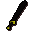

Black 2h sword

| Config name | black_2h_sword |
| Item id | 1313 |
| Value | 1920 gp |
| Weight | 8lb |
| Members | No |
| Tradeable | Yes |
| Stackable | No |
| Equip slot | righthand |
| Options | Wield |
| Category | weapon_2h_sword |
| Defined in | scripts/skill_combat/configs/melee/2hswords.obj |
| Equipment stats | Stab att -4, Slash att 27, Crush att 21, Magic att -4, Range def -1, Strength 26 |
Black 2h sword
A two handed sword.
Sold at
| Shop | Shopkeeper | Stock |
|---|---|---|
| Armoury | 1 | |
| Gulluck and Sons | 1 | |
| Gaius' Two Handed Shop. | 1 |
Quests
Referenced in scripts
scripts/levelrequire/scripts/tier10.rs2scripts/quests/quest_itgronigen/scripts/quest_itgronigen.rs2